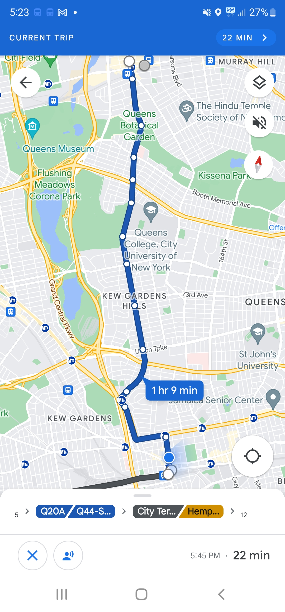

I have absolutely no idea how I would have navigated without google
maps, or some other digital navigation device when I first moved here. I
still solely rely on google maps for navigating to new places around the
city and honestly anywhere. I wonder how efficient it is though and if
native New Yorkers know their commutes so well that they can travel
faster then google maps. I dont know many native New Yorkers.
